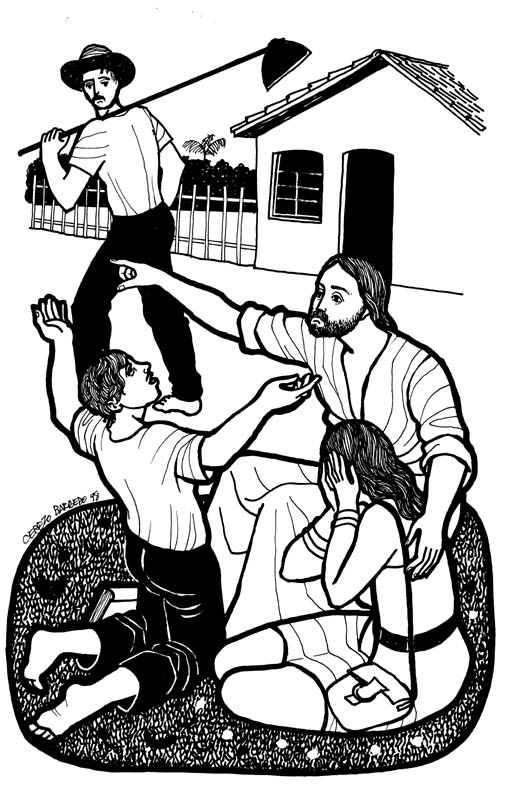
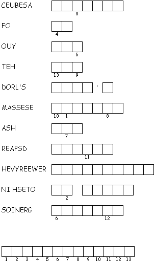
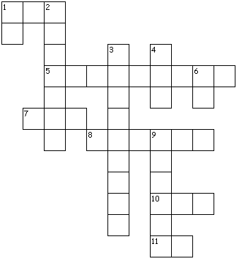

Misioneros del Sagrado Corazón en el Perú: From http://www.mscperu.org/grafic/graficoslit/aTO/picAto/29_to_a.jpg
www.logrus.ca Year
A
Proper 24
This week's lessons: Exodus 33:12-23 and Psalm 99 • Isaiah 45:1-7 and Psalm 96:1-9, (10-13) • 1 Thessalonians 1:1-10 • Matthew 22:15-22
Opening prayer by leader, or invite another participant to pray, or use:
Almighty God, who has caused all Holy Scripture to be written for our learning, open our ears and hearts today to learn from your word and from one another, we ask in Jesus' Name. Amen
Set the calendar-clock to the right date. Pentecost is the season of the church's growth, beginning with Pentecost Day which is the birthday of the church, and continuing to the end of the church year.Its colour is green.
Today, the Gospel reviews for us Jesus' teaching on paying taxes.
What was the sermon on? -
What was the Gospel lesson? -
Did anyone have any insights about...
1. What are the characteristics of a meal that make it a good image of God’s kingdom?
2. How do you respond to invitations you receive -- do you always RSVP? -- show up prepared?
3. Have you ever had the experience of not being invited? Why does that happen?
4. What is one way Christ speaks to your heart? How do you respond to his invitation?
5. How can you invite others to the banquet feast of God?
What parallels do you see between this reading and the previous reading(s)?
What parallels do you see between this reading and the previous reading(s)?
What parallels do you see between this reading and the previous reading(s)?
What parallels do you see between this reading and the previous reading(s)?
Pew-work Hand-outs
“Pew-work” is like Home-work, except that it is done in the pews, instead of being done at home. Because it is focussed on the readings (as the sermon, presumably, also is) it can be done during the sermon to help the listener concentrate. Or, it can be done while waiting for everyone else to finish their communion. It isn't done during prayers, or hymns, or the readings, because
During Prayers, we pray
During Hymns, we sing
During the Readings, we listen

Cerezo
Barredo's Lectionary illustrations --
http://www.servicioskoinonia.org/cerezo/dibujosA/48OrdinarioA25.jpg
Misioneros
del Sagrado Corazón en el Perú: From
http://www.mscperu.org/grafic/graficoslit/aTO/picAto/29_to_a.jpg
T H E S S A L
O N I A N S
|
(1 Thessalonians 1:2-3 NRSV) We always give thanks to God for all of you and mention you in our prayers, constantly {3} remembering before our God and Father your work of faith and labor of love and steadfastness of hope in our Lord Jesus Christ. |
Word List |
from http://www.efree.mb.ca/lectionarypuzzles free to distribute for free with this notice. Words are in a straight line left to right or top to bottom |
||
|
1. What did the Pharisees tell Jesus that he taught? _______________________________________________________________________________________ 2. What did Jesus ask to see? _______________________________________________________________________________________ 3. Whose picture was on the coin? _______________________________________________________________________________________ 4. What did Jesus say? _______________________________________________________________________________________ 5. What did the Pharisees do? _______________________________________________________________________________________ Questions taken from Sunday School Lessons; http://www.sundayschoollessons.com/baplord.htm |

|
|
 |
1:1 Paul, Silvanus, and Timothy, To the church of the Thessalonians in God the Father and the Lord Jesus Christ: Grace to you and peace. 1:2 We always give thanks to God for all of you and mention you in our prayers, constantly 1:3 remembering before our God and Father your work of faith and labor of love and steadfastness of hope in our Lord Jesus Christ. 1:4 For we know, brothers and sisters beloved by God, that he has chosen you, 1:5 because our message of the gospel came to you not in word only, but also in power and in the Holy Spirit and with full conviction; just as you know what kind of persons we proved to be among you for your sake. 1:6 And you became imitators of us and of the Lord, for in spite of persecution you received the word with joy inspired by the Holy Spirit, 1:7 so that you became an example to all the believers in Macedonia and Achaia. 1:8 For the word of the Lord has sounded forth from you not only in Macedonia and Achaia, but in every place your faith in God has become known, so that we have no need to speak about it. 1:9 For the people of those regions report about us what kind of welcome we had among you, and how you turned to God from idols, to serve a living and true God, 1:10 and to wait for his Son from heaven, whom he raised from the dead--Jesus, who rescues us from the wrath that is coming. |
When do you get discouraged? ____________________________________________________ _________________________________________________________________________________________________________________________________________________________________________________________________________________________________________________________
Whom do you turn to for encouragement? ________________________________________________ _________________________________________________________________________________________________________________________________________________________________________________________________________________________________________________________
Do you notice when your friends are discouraged, and how do you encourage them? _______________ _________________________________________________________________________________________________________________________________________________________________________________________________________________________________________________________
|
What Scripture is the Sermon is based on? |
__________________________________ |
|
What is the main point of the Sermon? |
__________________________________ |
|
Write down any figures of speech used by the preacher (Metaphors, Similes, hyperbole) |
__________________________________ |
|
Write down any new, unusual or particularly interesting words the preacher uses |
_______________
|
Focus Statement: “Render unto Caesar that which is Caesar's”
|
_________________________________________ |
|
_________________________________________ |
|
_________________________________________ |
|
_________________________________________ |
|
_________________________________________ |
Next week: Deuteronomy 34:1-12 and Psalm 90:1-6, 13-17 or Leviticus 19:1-2, 15-18 and Psalm 1, 1 Thessalonians 2:1-8, Matthew 22:34-46